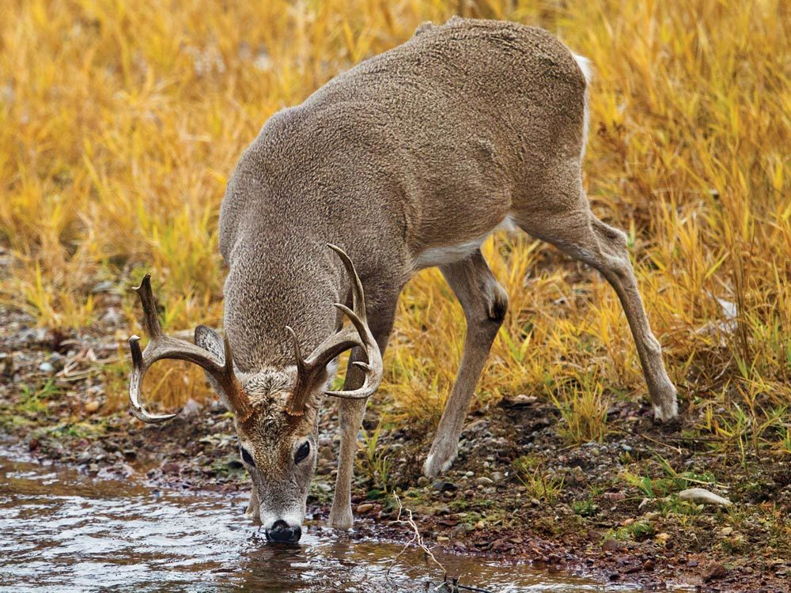
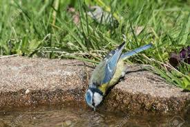
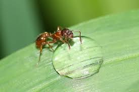

jungle survival
Tubuh manusia mengandung air sebanyak 65% yang berfungsi untuk mempertahankan suhu tubuh agar tetap normal dan mempertahankan ginjal secara optimal. Orang dewasa dapat bertahan selama tiga minggu tanpa makanan tetapi hanya bisa bertahan tiga hari tanpa air.
Dalam kondisi survival air sangatlah penting, dan jangan menunggu persediaan air habis baru kita mencari, tetapi hematlah air yang ada dan carilah sumber air terdekat pada daerah yang kita lalui disaat kita mencari arah jalan keluar.
Tubuh manusia kehilangan 3-4 liter air setiap harinya. Kehilangan cairan lewat pernafasan dan keringat yang meningkat seiring meningkatnya kerja otot dan temperature, muntah dan diare juga menambah kehilangan cairan tubuh. Cairan tubuh yang terbuang tadi harus segera diganti dengan air maupun cairan yang terdapat dalam makanan. Jikacairan tubuh banyak terbuang tanpa mendapatkan pengganti segera mungkin akan menyebabkan survivor terkena dehidrasi. Beberapa tanda dan gejala umum dehidrasi adalah :
1. Air seni berwarna gelap dengan bau yang cukup tajam.
2. Air seni sedikit.
3. Mata cekung dan berwarna gelap.
4. Kelelahan yang sangat.
5. Emosional dan tidak stabil.
6. Kulit kehilangan elastisitasnya.
Saat persediaan air sedikit, kondisi dehidrasi harus dihindari dengan mempertahankan sedapat mungkin cairan tubuh, caranya :
1. Hindari pergerakan yang aktif, menghindarinya dengan cara beristirahat lebih banyak.
2. jangan merokok atau berbicara lebih banyak.
3. Buat tempat perlindungan bila ingin berteduh untuk mengendalikan suhu tubuh kembali normal.
4. Jangan berbaring ditempat yang panas atau permukaan tanah, karena dapat menyebabkan banyak mengeluarkan keringat.
5. Jangan terlalu banyak makan, karen untuk mencerna makanan tersebut memerlukan air yang diambil dari tubuh kita apabila kita kurang minum.
6. Bila air kita dapatkan dengan cara menampung, maka kita harus memasaknya terlebuh dahulu hingga mendidih untuk memastikan kesehatan kita.
7. usahakan tetap bernafas melalui hidung.
A. Binatang sebagai indikator keberadaan air
1. Mamalia

2. Burung

3. Serangga

B. air yang dapat diminum dan cara mendapatkannya
1. Air hujan
Air hujan dapat langsung diminum dengan mengumpulkannya terlebih dahulu, caranya :
a. Menggali lubang lalu dipoles sekelilingnya oleh tanah liat agar dapat menampung air hujan dengan baik.
b. Menampungnya melalui alumunium voil, kulit kayu, ruas-ruas bambu dan juga dapat diambil dari genangan air hujan dari bivak ponco.
2. Dari tampungan daun-daun lebar
Biasanya ada setelah hujan atau pengembunan dipagi hari.
3. Air pada tanaman rambat
Potong bagian bawahnya kira-kira 1,2 m panjangnya dan perhatikan cairan yang keluar. Jika cairannya berwarna putih susu jangan diminum. Jika bening kemungkinan bisa diminum.
Biarkan airnya menetes terlebih dahulu dan kemudian perhatikan apakah warnanya berubah atau tidak. Jika rasanya seperti air biasa manis atau berasa kayu maka aman untuk diminum. Jika terasa masam atau getir diujung lidah, jangan diminum.
4. Air pada ruas bambu
Air dapat ditemukan pada rongga batangnya. Bambu yang mengandung air dapat diketahui dengan cara menggoyang batangnya. Potonglah bagian atasnya kemudian potong bagian bawahnya yang mengandung air.
5. Air pada rotan
Batang rotan muda juga mengandung air dan terasa manis.
6. Pada batang pisang
Potong pohon pisang, kemudian lubangi bagian tengahnya lalu tunggu beberapa menit. Air akan menggenang disana. Air dari pohon pisang ini memang sedikit berasa, tetapi aman untuk diminum.
7. Embun
Embun dapat kita ambil dengan menggunakan kain bersih dan diperas untuk mengambil air tersebut.
C. Sumber air yang harus dimasak terlebih dahulu dan tidak boleh diminum langsung
1. Air tergenang.
2. Air yang temperatur suhunya panas.
3. Air dari sungai.
4. Air yang didapatkan dengan cara menggali tanah dan pasir pada daerah pantai atau sungai yang kering.